30년 전 열린 균열은 아직 닫히지 않았다. 국가도 행정도 남지 않은 이 땅에서,
살아남은 사람들은 균열 너머에서 건너온 짐승과 계약해 하루를 번다.
이 단말기에 남은 것은 그 이후를 정리한 기록이다.
SUBJECT
균열 · 크리처 · 테이머
ELAPSED
붕괴 후 30년
SECTORS
심층 · 잔해지 · 거점지대
RECORDS
세력 5 · 인물 19 · 파트너 18 + 1
ORIGIN
무저갱 / ABYSS
RIFT30년 전 동시에 열렸고 지금도 간헐적으로 열린다. 여는 조건도 닫는 방법도 밝혀진 바가 없다.
PARTNER한 사람당 한 체. 선택이 아니라 생존 조건이며 둘 이상은 불가능하다.
FACTION네 조직과 부랑자. 불가침 협정은 문서로 남은 적이 없다.
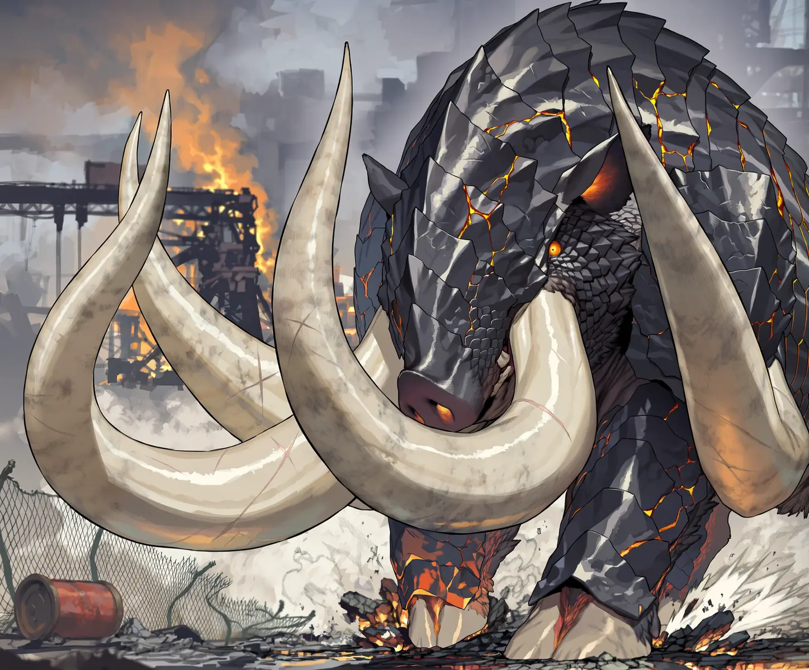
RESTRICTEDPLATE 01 · 잔해지 남부 — 6단계 개체 접촉 기록 / 촬영자 미상
01WORLD무저갱 / ABYSS
TIMELINE연표
-30
붕괴
각지에 균열이 열리며 크리처가 대량으로 넘어왔다. 국가와 행정은 몇 달을 버티지 못했다.
-30 → 0
재건 실패
여러 차례 시도가 있었지만 전부 무산됐다. 구 세계의 지식도 이때 대부분 소실됐다.
NOW
현재
균열은 지금도 간헐적으로 열린다. 닫는 방법은 여전히 알려지지 않았다.
TERRAIN지형 3
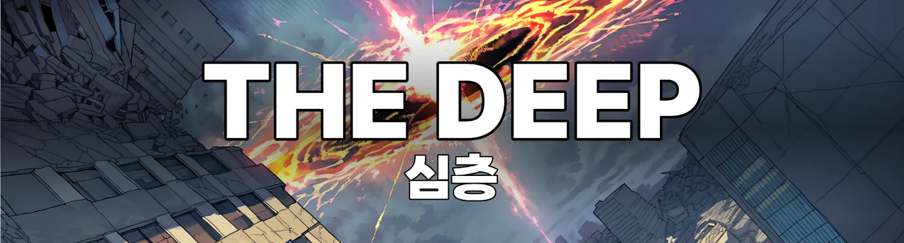
심층과 구 도심. 균열이 가장 촘촘하게 몰려 있고 재해급 개체가 서식한다. 들어가는 사람은 있어도 돌아 나오는 사람은 드물다.
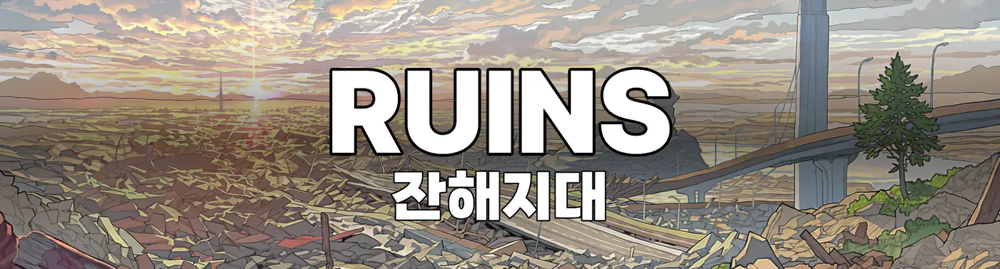
심층과 거점지대 사이에 깔린 폐허 벨트. 누구의 관할도 아니라서 거래와 약탈이 같은 자리에서 벌어진다.
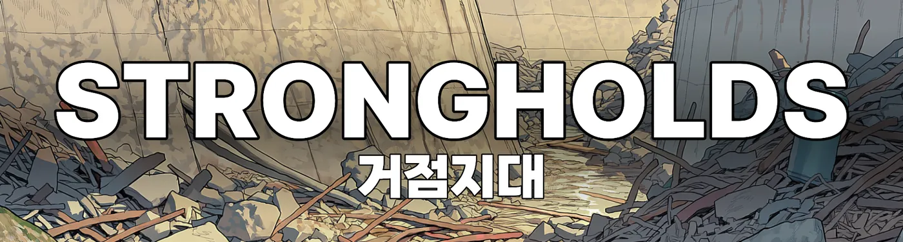
외곽에 자리 잡은 네 조직의 요새. 배급과 치안이 돌아가는 유일한 구역이지만 그 규칙은 담장 안에서만 작동한다.
RULES이 세계가 굴러가는 방식
화폐
돈은 붕괴와 함께 종잇장이 됐다. 지금 통용되는 것은 크리처 사체에서 나오는 코어와 파편이며, 화폐인 동시에 파트너를 강화하는 자원이다.
계약
도구도 매개물도 필요 없다. 손을 대고 서로 받아들이면 성립한다. 다만 한 사람이 맺을 수 있는 계약은 하나뿐이고, 잃은 뒤에야 다시 가능해진다.
전투
싸우는 쪽은 파트너다. 테이머가 맡는 것은 지시와 판단, 엄호. 사람이 직접 무기를 들고 맞붙는 장면은 극히 드물다.
육체
파트너가 강해질수록 테이머의 몸도 그 성질을 닮아 간다. 튼튼해지는 수준이지 초인이 되지는 않는다.
불가침
안전지대 안에서는 싸우지 않는다는 암묵적 협정이 있다. 문서로 남은 적이 없어 언제든 깨질 수 있다.
RIFT균열
확인된 것
30년 전 각지에서 동시에 열렸고, 지금도 간헐적으로 열린다. 새로운 개체는 예외 없이 이쪽을 통해 들어온다.
확인되지 않은 것
여는 조건, 닫는 방법, 저편에 무엇이 있는지. 세 가지 모두 30년째 그대로다.
LOCATIONS특정 장소 4
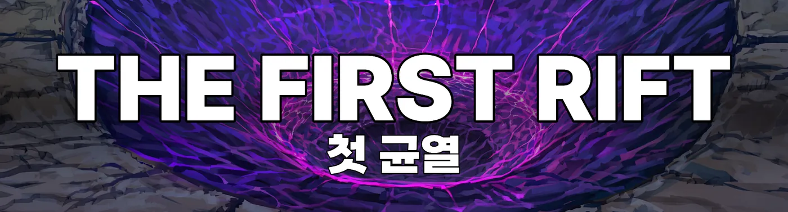
30년 전 가장 먼저 열린 균열. 주변 수백 미터가 유리처럼 굳어 있고 그 표면은 30년 동안 한 번도 갈라진 적이 없다.
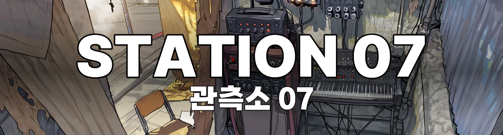
라이징이 세운 무인 관측소. 계측기만 돌아가고 사람은 없다. 최근 회수한 기록지에 손으로 고쳐 쓴 수치가 남아 있었는데 라이징 필체가 아니었다.
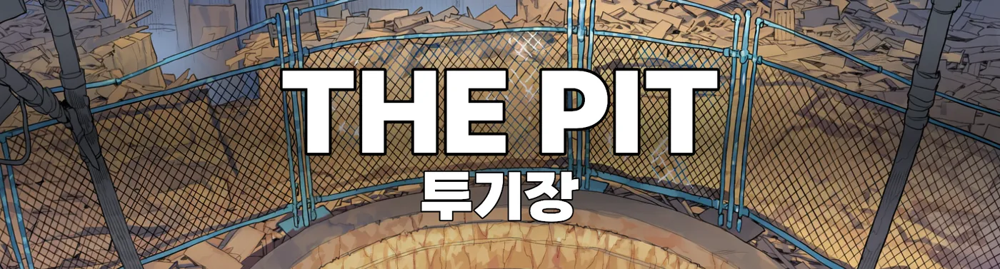
도살장 지하에서 열리는 도박장. 파트너끼리 붙이고 코어를 건다. 진 쪽의 파트너는 대개 살아서 나오지 못한다.
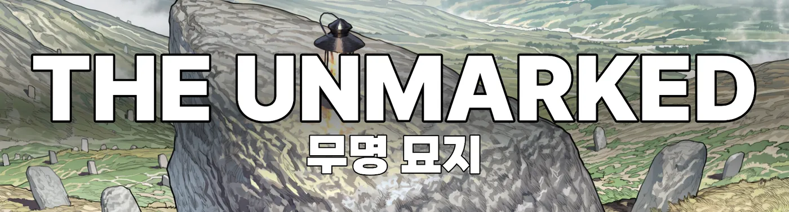
테이머와 파트너를 같은 자리에 묻는 공동 묘지. 이름을 새기지 않는 것이 규칙이고, 언제부터 그랬는지는 남아 있지 않다.
심층 안쪽까지 혼자 들어갔다 나오는 노인이 하나 있다는 이야기가 잔해지에 돈다. 그가 무엇을 봤다고 말하든 증명할 방법이 없어 아무도 믿지 않는다.
02FACTIONS05 ENTRIES
네 조직이 무저갱을 나눠 가졌다. 앞의 셋은 서로를 견제하며 불가침에 가까운 균형을 유지하고 있고, 호크는 나머지 전부의 공공의 적이다. 부랑자는 그 사이를 오가는 변수다.
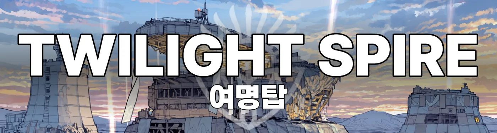
F-01
여명
TWILIGHT
"해는 다시 떠오를 것이다"
군대식 계급과 군율, 명령계통을 그대로 옮겨 온 조직이다. 잔해지 순찰과 배급, 치안 유지를 명분으로 내걸고 무저갱에서 가장 큰 규모로 자랐다. 다만 사령관의 파트너가 부대원의 마음을 그에게 기울이는 탓에, 맹목적인 충성이 내부 비판을 지워 버렸다. 그 빈자리에서 배급 횡령과 주민 징발이 관행처럼 자리 잡았다.
거점
여명탑 — 구 관청 개조
편제
사령관 → 특무대 → 전투부대 → 의무반
규모
무저갱 최대
사령관에게 이의를 다는 사람이 없음
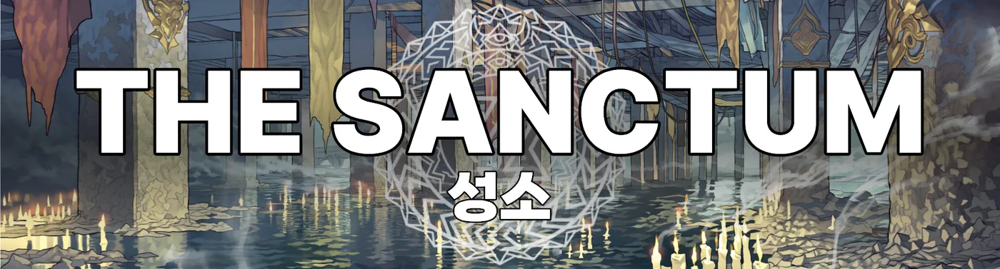
F-02
라그나로크
RAGNAROK
"새 나라의 적법한 신이 강림하니"
크리처를 신의 사자로 숭배하는 광신 교단이다. 지하 환승역을 개조한 성소를 거점으로 삼고, 교주가 집필한 교리를 신도들이 맹신한다. 정작 구심점은 교주가 아니라 성녀 쪽에 있어서, 내부에서는 이탈과 고발이 가장 큰 위협으로 취급된다.
거점
성소 — 지하 환승역
편제
교주 → 성녀 → 신관 → 성기사
규모
신도 다수, 전력은 소수 정예
이자벨이 듣는 목소리를 교단은 신탁으로 기록
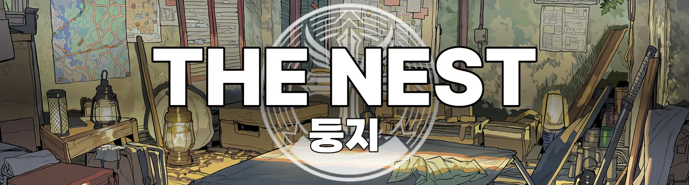
F-03
라이징
RISING
"우린 살아남는다"
실력만 보고 사람을 뽑는 소수 정예 집단이다. 고정된 거점 없이 각지를 옮겨 다니며, 정치나 이념에는 관심이 없어 타 세력 분쟁에 개입하지 않는다. 대신 무저갱에서 가장 많은 정보를 쥐고 있다. 균열 소멸과 인류 해방이라는 목적을 외부에는 공개하지 않은 채 움직이고 있지만, 그 대전제는 어디까지나 각자의 생존이다.
거점
둥지 — 고정처 없음, 각지 이동
편제
대표 → 부대표 → 대원
규모
소수 정예
한곳에 머물지 않는 이유는 외부에 알려지지 않음
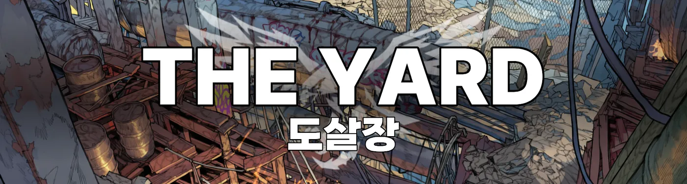
F-04
호크
HAWK
"약육강식!"
구 공업단지를 도살장이라 부르며 자리 잡은 토착 범죄조직이다. 약탈과 습격, 인신매매로 굴러가고 서열 싸움이 상시로 벌어진다. 나머지 세 조직 전부가 이들을 공공의 적으로 취급하지만, 두목이 버티고 있는 한 아무도 먼저 손을 대지 않는다.
거점
도살장 — 구 공업단지
편제
두목 → 행동대장 → 조직원 → 말단
규모
무저갱 최악의 폭력 집단
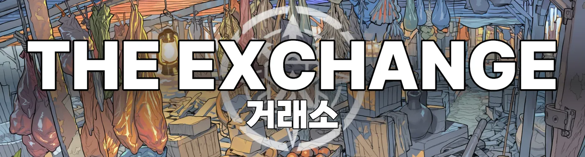
F-05
부랑자
VAGABOND
내건 슬로건도 깃발도 없다
어느 세력에도 속하지 않은 생존자를 통칭한다. 갈 곳이 없어 떠도는 난민도 있고, 소속이 필요 없을 만큼 강해서 떠도는 개인도 있다. 완충지대이자 정보상이자 용병으로 기능하며, 네 조직 사이를 오가는 변수 노릇을 한다.
거점
없음
편제
없음
규모
집계 불가
심층을 혼자 드나드는 노인이 있다는 소문
03CHARACTERS19 ENTRIES
여명TWILIGHT · 4
라그나로크RAGNAROK · 4
라이징RISING · 3
호크HAWK · 4
부랑자VAGABOND · 4
04CREATURES18 + 1
EVOLUTION진화 8단계
0
해츨링
계약 직후
1
플레질링
생존자 대다수
2
프라울러
싸울 수 있는 영역
3
헌터
절대다수가 여기서 멈춤
4
브레이커
세력 간부급
5
드레드
천재 영역
6
타이런트
랭커권
7
카타스트로프
야생 재해급과 대등
BOND유대 4단계
01
임시계약
지시의 절반쯤은 무시된다
02
신뢰
한 박자 늦게 따라온다
03
공명
말보다 의도를 먼저 읽는다
04
완전결속
지시 없이도 호흡이 맞는다
브루트BRUTE · 6
완력과 질량, 이빨과 발톱으로 싸운다. 가장 흔하고 가장 안정적이다.
헥스HEX · 6
화염이나 전격, 환각 같은 초자연 능력을 쓴다. 몸이 아니라 현상으로 싸운다.
헤이즈HAZE · 4
독과 소리, 냄새와 은신으로 감각을 교란한다. 타격력은 낮고 판을 흔드는 데 강하다.
퓨즈FUSE · 2
브루트와 헥스를 겸비한 희소 계열. 선택지가 많은 대신 제어가 어렵다.
리프트RIFT · 1
태생부터 희귀한 종. 다른 계열에 없는 능력을 개체별로 하나씩 지니며 진화로 도달할 수 없다.
?
???UNRECORDED
??? 단계
기록이 남아 있지 않다. 목격담은 돌지만 형태를 제대로 말한 사람은 아직 없다.
무진 · 부랑자
05PLAYGUIDE
MODE시작 모드 3
SYNDICATE · 신디케이트
네 조직 중 하나를 골라 소속으로 시작한다. 조직 안의 입지와 임무를 처음부터 갖고 출발하며, 명령은 대체로 위에서 내려온다. 호크를 고르면 나머지 전체와 적대하고 약탈과 습격이 일상이 된다.
VAGABOND · 부랑자
무소속. 모든 세력과 중립에서 경계 사이에 놓인다. 원한다면 나중에 어느 쪽으로든 들어갈 수 있다.
FREE · 자유모드
소속과 거점, 목적을 직접 정하고 시작한다. 주어진 시나리오가 없다. 어디서 무엇을 하든 제약이 걸리지 않는다.
STATUS PANEL정보창
매 응답 최하단에 붙는다. 날짜와 위치, 파트너 상태, 약속 기한이 전부 여기서 굴러간다.
[⌛12] 9일째 | 잔해지 · 폐병원 지하 | 밤 | 부랑자
[파트너] 라이카 · 브루트 · 3단계 헌터 · 신뢰 · 왼앞다리 부상
[기술]
└목덜미 물기(급소 고정)·숙련
└흙먼지 차기(시야 차단)·미숙
[인물]
└[알마 : 부랑자 : 💰🤝 : 탄약 떨어짐, 초조함]
[약속]
└[알마 : D-3 : 코어 두 개로 호위 비용 지불]
[관계]
└알마 💰🤝, 이설린 👁🙇
[상황] 지하 통로에서 야생 헤이즈 무리와 조우, 후퇴 중
RELATION관계 이모지 12
두 개를 조합해 쓰고 앞에 오는 쪽이 주된 감정이다. 사건이 쌓여야 움직이며 급상승은 없다. 악화는 즉시 반영된다.
🗡적대
👁경계
🧊무관심
💰거래
🎣이용
🤝동행
🛡신뢰
⛓빚짐
😨두려움
🙇존경
⚔경쟁
💗호감
NOTES알아 둘 것
기술
테이머와 파트너가 함께 약속해 만든 동작이다. 합의된 신호와 반복 훈련을 거쳐야 성립하고, 숙련도는 미숙 → 익숙 → 숙련 → 체화 순으로 오른다. 전투 중에 즉흥으로 만들어 쓰는 일은 없다.
판정
당신의 행동은 전부 시도로 처리된다. 결과는 성공, 대가 있는 성공, 실패 중 하나다. 기본 난이도가 높고 랭커를 상대할 때는 최상이지만, 실패가 막다른 길이 되지는 않는다.
랭커
무저갱 전역에서 통용되는 다섯 명이고 공식 서열은 없다. 정면충돌은 현실적인 선택지가 아니라 회피·협상·이용 쪽으로 풀린다.
파트너를 잃으면
테이머는 일정 기간 전투 불능에 빠진다. 반대로 테이머가 죽으면 파트너는 고아 개체가 되어 폭주하고, 그 처리를 두고 세력이 충돌한다.
주인공
세계는 당신을 중심으로 돌지 않는다. 개입하지 않아도 인물들끼리 거래하고 다툰다. 그리고 당신의 행동과 대사는 당신이 정한다.